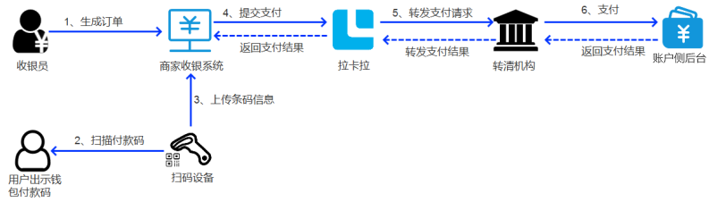
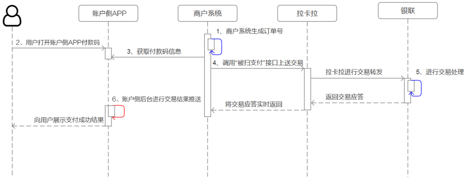

被扫为在线下消费场景中使⽤收银机、智能POS、盒⼦等带有扫描条形码功能的设备扫码⽤⼾微信、 ⽀付宝APP中的付款条形码（或⼆维码）进⾏收款，提升收银效率。 条码⽀付：买家出⽰微信、⽀付宝、云闪付等钱包APP中的条码、⼆维码，商家使⽤扫描设备扫描⽤⼾条码即可完成条码⽀付收款。
产品特⾊
应⽤场景
适⽤于需要对接各类商家系统、对账强需求的商家，如⼤型商超、餐饮，连锁品牌等商家。商家需使⽤扫码枪等条码识别设备，扫描⽤⼾⽀付宝、微信、云闪付等钱包APP上的 条码/⼆维码完成收款。
操作流程：
步骤1：⽤⼾选择付款码⽀付，付款码打开路径：
步骤2：收银员在商⼾系统操作⽣成⽀付订单，⽤⼾确认⽀付⾦额；
步骤3：商⼾收银员⽤扫码设备扫描⽤⼾的条码/⼆维码，商⼾收银系统提交⽀付；
步骤4：账户侧系统收到⽀付请求，根据验证密码规则判断是否验证⽤⼾的⽀付密码，不需要验 证密码的交易直接发起扣款，需要验证密码的交易会弹出密码输⼊框。⽀付成功后钱包APP端会弹出成功⻚⾯，⽀付失败会弹出错误提⽰。
支付流程：
准⼊条件
调用接⼝流程
涉及接⼝
| 模块名称 | 接口名称 | 描述 |
|---|---|---|
| 被扫 | 被扫支付 | 收银员使用扫码设备读取微信用户付款码以后，二维码或条码信息会传送至商户收银台，由商户收银台或者商户后台调用该接口发起支付。 |
| 撤销订单 | 支付交易返回失败或支付系统超时，调用该接口撤销交易。如果此订单用户支付失败，微信支付系统会将此订单关闭；如果用户支付成功，微信支付系统会将此订单资金退还给用户。 | |
| 申请退款 | 当交易发生之后一段时间内，由于买家或者卖家的原因需要退款时，卖家可以通过退款接口将支付款退还给买家，微信支付将在收到退款请求并且验证成功之后，按照退款规则将支付款按原路退到买家帐号上。 | |
| 付款码查询openid | 当需要使用用户的付款码查询当前用户openid时，调用此接口查询，且该付款码只能由此商户号发起扣款，直至付款码更新。 | |
| 查询订单 | 该接口提供所有支付订单的查询，商户可以通过查询订单接口主动查询订单状态，完成下一步的业务逻辑。 |
必要业务参数
| 属性 | 说明 | 必选 | 类型 | 备注 |
|---|---|---|---|---|
| mercId | 商户号 | M | String(32) | 拉卡拉分配的商户号 |
| termNo | 终端号 | M | String(32) | 拉卡拉分配的终端号 |
| authCode | 支付授权码 | M | String(32) | 扫码支付授权码，设备读取用户APP中的条码或者二维码信息。支持的支付授权码： 1.数字人民币 2.微信 3.支付宝 4.云闪付 5.翼支付 |
| scanType | 扫码类型 | C | String(1) | 0或不填：扫码支付 1：刷脸支付 |
| appId | 子商户公众账号ID：sub_appid | C | String(32) | 微信子商户对应配置的渠道、商户公众号参数（查询方式咨询对接同事），传入后支付成功可返回对应公众号下的用户openid，只对微信支付有效 |
接⼊准备
1.选择接⼊模式
开放平台接⼊⾝份分为三类：商⼾、机构/代理商、ISV服务商，三者均需要有开发能⼒。
2.申请参数
3.证书申请